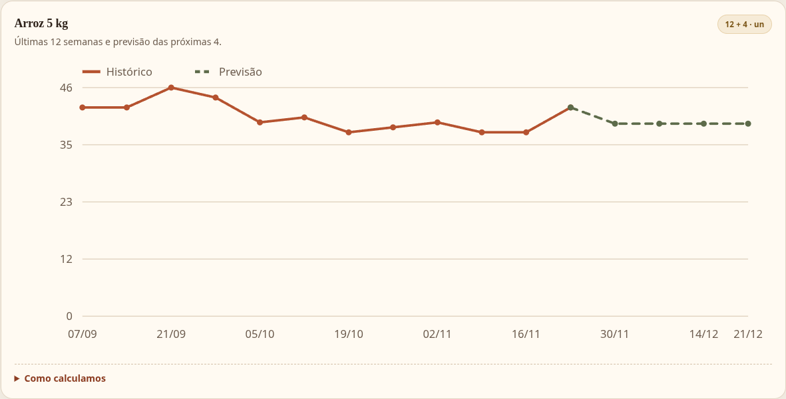
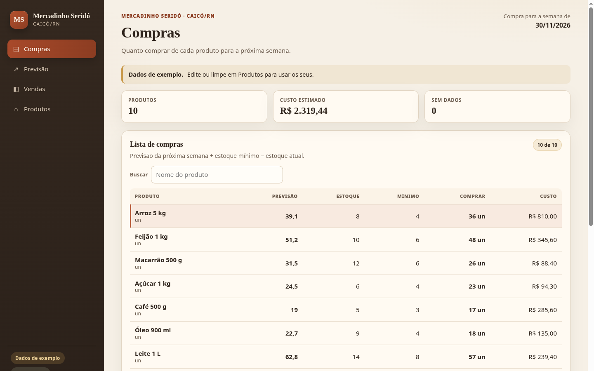

DCT2403 · Sistemas de Apoio à Decisão · UFRN/CERES
Mercadinho
Seridó
Um SAD para a decisão semanal de compra em um mercadinho de bairro em Caicó/RN.
Sistema + slides · Dezembro/2026
Camada de decisão · não é um PDV/ERP
Abertura: “Este é um SAD para uma decisão específica: quanto comprar de cada produto na próxima semana, em um mercadinho de bairro em Caicó/RN. Ele não é um PDV e não é um ERP.”
01 · Contexto
02 / 10
O problema não é decidir uma vez. É decidir toda semana.
O mercadinho compra, estoca e vende. Toda semana o dono precisa decidir quanto repor de cada produto — e o erro aparece rápido: falta na prateleira, sobra no estoque ou capital parado.
A planilha registra o que passou. Ela não responde à pergunta de segunda-feira: quanto comprar agora?
Caicó/RN · Seridó
VENDAS→PREVISÃO→COMPRA
10produtos no exemplo
12semanas de histórico
4semanas previstas
Rotina semanal de um pequeno mercadinho.O exemplo é ilustrativo; o dono usa os próprios dados.
Contexto: o mercadinho é pequeno, regional e tem uma rotina semanal. Os números são do conjunto de exemplo: 10 produtos, 12 semanas de vendas e previsão de 4 semanas.
02 · Problema
03 / 10
Falta, sobra e compra no escuro.
01Ruptura
O cliente procura, o produto não está na prateleira. Perde-se a venda e a confiança.
02Excesso
O estoque enche, o dinheiro fica parado e a validade corre. O que era margem vira perda.
03Compra sem histórico
O dono compra por memória: repete o mês passado, ignora tendência e não sabe o erro da previsão.
“O recorte: um usuário, uma decisão, um domínio.”
A planilha registra o passado.O SAD projeta o próximo passo.
Problema: não é falta de sistema, é falta de decisão. A planilha registra; o SAD projeta. O recorte atende ao pedido da disciplina: um usuário, uma decisão e um domínio específico.
03 · Usuário e decisão
04 / 10
Quem decide, o que decide, quando decide.
MS
Dono do mercadinho
Mercadinho Seridó · Caicó/RN
Toda semana, antes de fazer o pedido de compra.
Persona e dados ilustrativos
1O que vendeu?Histórico semanal por produto, com quantidade e receita.
2Quanto vai vender?Previsão automática da próxima semana, com erro medido.
3Quanto comprar?Previsão + estoque mínimo − estoque atual, por produto.
Saída: lista de compras com quantidade e custo estimado.
A decisão é recorrente; o sistema precisa ser usado toda semana.É isso que separa um SAD de um projeto de compra única.
Usuário: o dono. A decisão é recorrente: quanto comprar de cada produto na próxima semana. O sistema não é um ERP: ele decide em cima dos dados que o dono já registra.
04 · Arquitetura SAD
05 / 10
Dados, modelos, conhecimento e interface — no mesmo fluxo.
01Dados
Produtos, vendas semanais, estoque atual e estoque mínimo.
02Modelos
Média móvel, suavização exponencial e regressão; backtest de 4 semanas.
03Conhecimento
Unidade de medida, estoque mínimo e a regra de compra.
04Interface
Compras, Vendas e Produtos. A decisão na primeira tela.
Dados→Modelos→Decisão→Interface
O SAD não substitui o caixa ou o ERP: ele consome os dados e devolve decisão.
Componentes clássicos de SAD (Turban; Sprague & Watson).O conhecimento é explícito: regras, não caixa-preta.
Arquitetura: os quatro componentes do SAD. O diferencial é o conhecimento explícito: a unidade, o estoque mínimo e a regra de compra entram no cálculo, não ficam só no discurso.
05 · Previsão
06 / 10
Prever para decidir — e saber quanto o erro custa.
Média móvelReage rápido; ignora tendência.
Suavização exponencialPesa mais as semanas recentes.
Regressão linearCaptura tendência de crescimento ou queda.
O modo automático testa os três métodos nas últimas 4 semanas e escolhe o menor MAE. O backtest fica na tela, dentro de “Como calculamos”.
ArrozMAE 1,8 un
MAPE4,4%
LeiteMAE 1,5 un
MAPE2,7%
Leitura: o erro está na tela. A decisão sabe o quanto está apostando — não é uma caixa-preta.

Tela real: últimas 12 semanas + 4 previstas, com método e erro no bloco “Como calculamos”.
MAE e MAPE calculados no backtest de 4 semanas.A mostra é o exemplo; o método roda sobre os dados do dono.
Previsão: o importante não é o método mais sofisticado, é saber o erro. O automático escolhe por MAE. No exemplo, o arroz teve MAE de 1,8 unidade e MAPE de 4,4%; o leite, MAE de 1,5 e MAPE de 2,7%.
06 · Regra da compra
07 / 10
Da previsão à compra em uma conta simples.
Regra
necessidade = max(0, previsão + mínimo − estoque)
sugestão = un ? arredonda para cima : 1 casa
custo = sugestão × custo unitário
“Simples o bastante para o dono confiar; explícito o bastante para a banca auditar.”
Exemplo: arroz 5 kg
| Indicador | Valor |
|---|
| Previsão da próxima semana | 38,8 un |
| Estoque atual | 8 un |
| Estoque mínimo | 4 un |
| Necessidade | 34,8 un |
| Compra sugerida | 35 un |
| Custo estimado | R$ 787,50 |
O dono decide a compra final. O app é uma sugestão; o estoque é atualizado manualmente.
Unidade “un” arredonda para cima; kg e L usam uma casa decimal.Sem lead time, validade ou orçamento no MVP.
Regra: previsão + estoque mínimo menos estoque atual. No exemplo do arroz: 38,8 + 4 − 8 = 34,8; arredonda para 35 unidades; a R$ 22,50, custa R$ 787,50. O dono decide a compra final.
07 · Demonstração
08 / 10
A decisão da semana em uma tela.
Lista de compras sugerida, previsão por produto e o gráfico de 12 + 4. Tudo com os dados que o dono registrou.

Demo ao vivo: Compras → Vendas → Produtos.O dono vê a conta e o custo antes de comprar.
Demonstração: abrir Compras, mostrar a lista e o custo total; selecionar um produto e abrir “Como calculamos”; ir para Vendas e mostrar o lançamento semanal; finalizar em Produtos com o cadastro e o exemplo/limpar.
08 · Entrega e limites
09 / 10
O que o MVP entrega — e o que fica para depois.
Entrega
- 3 abas: Compras, Vendas e Produtos.
- Previsão automática com erro na tela.
- Compra sugerida com quantidade e custo.
- Exemplo rotulado, dados no navegador.
- 54 testes e deploy no GitHub Pages.
Limites e próximos passos
- Estoque manual: o app não é PDV.
- Sem lead time, validade ou orçamento.
- Sem fornecedores, CSV ou multiusuário.
- Próximo passo: validar com um mercadinho real.
- A versão frigorífico ficou preservada como legado.
“Um SAD honesto mostra o limite do modelo, não só o resultado.”
A limitação está na interface e nos slides.Isso protege o dono e a banca.
Limitações: ser explícito é mais forte do que prometer tudo. O MVP não faz PDV, validade, lead time, orçamento ou fornecedores. O próximo passo é validar com um mercadinho real. O valor está na decisão semanal, não na operação inteira.
09 · Encerramento
10 / 10
Uma decisão simples, toda semana.
Mercadinho Seridó · previsão de vendas + lista de compras para um pequeno mercadinho de Caicó/RN.
MS Mercadinho Seridó · Caicó/RN · DCT2403
Fechamento: retomar a decisão, a regra e o limite. Link do app no rodapé. Perguntas.